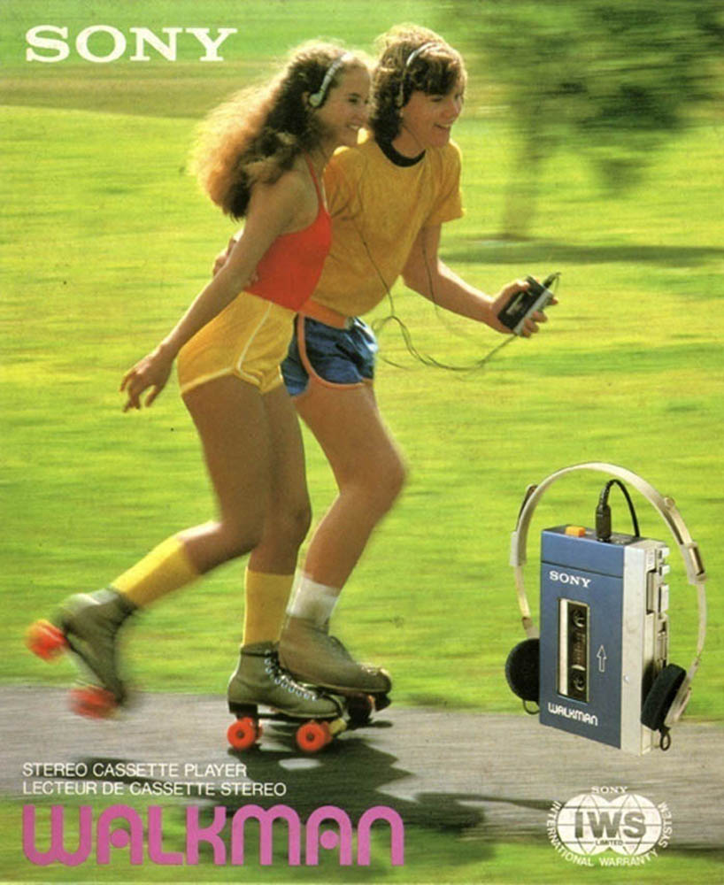

Experience the Revolution
The Sony Walkman, introduced by Sony Corporation in 1979, was the world's first portable music player, allowing users to listen to music on the go. With its sleek design and innovative technology, the Walkman became a must-have accessory for music lovers, enabling them to carry their favorite tunes wherever they went.
